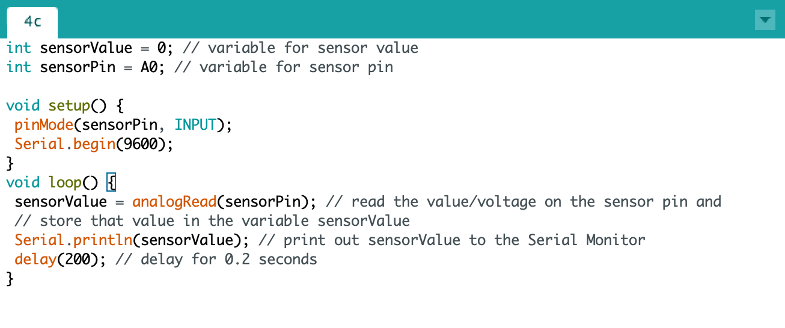
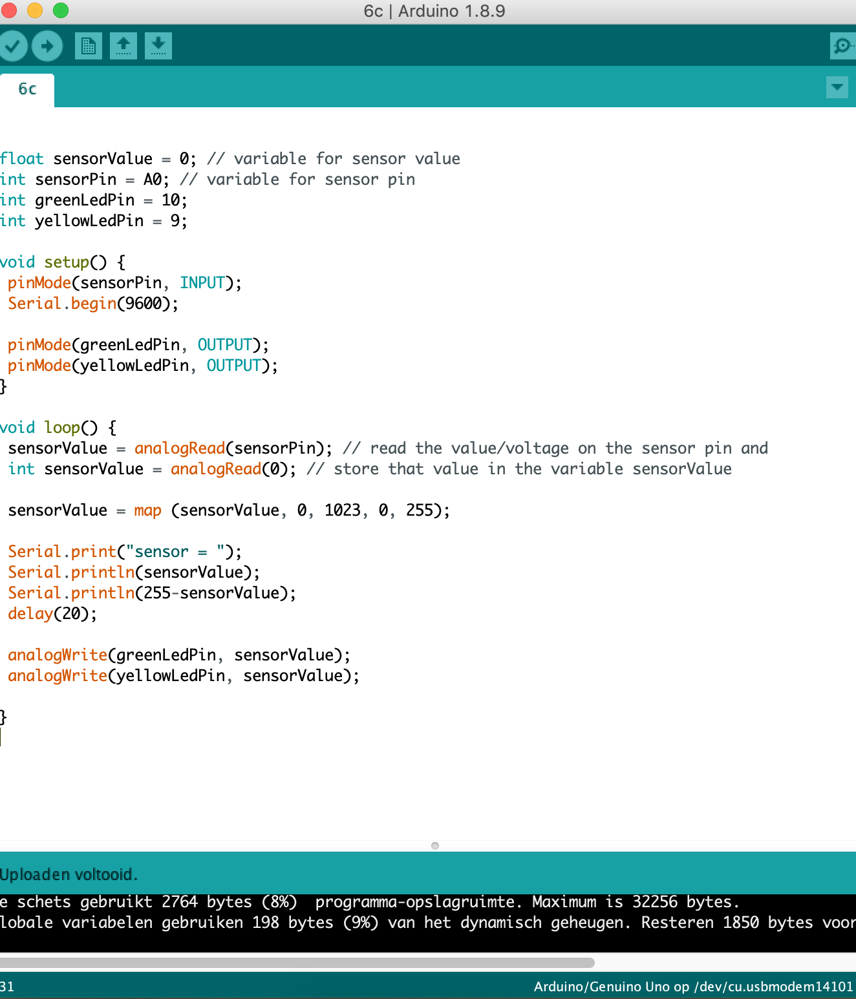
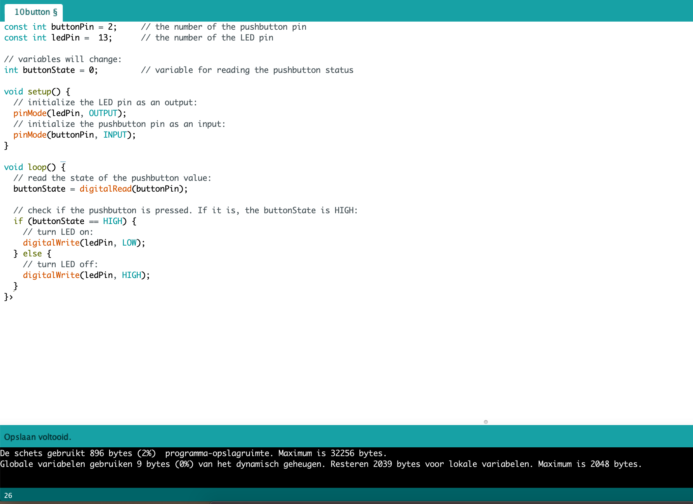
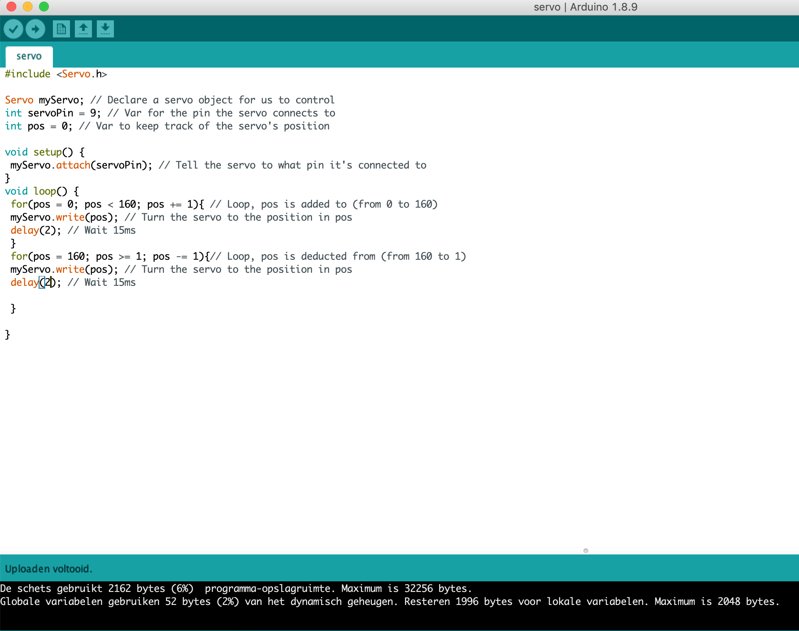
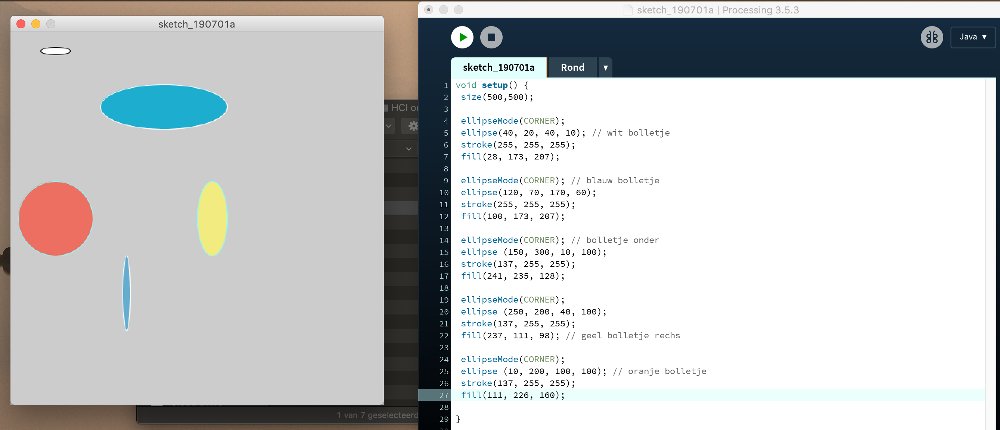
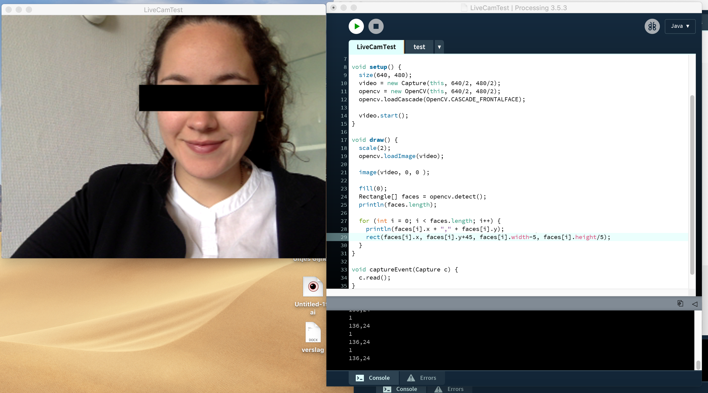
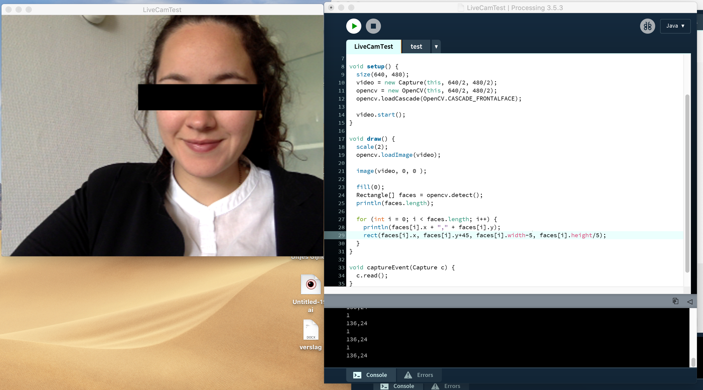

Workshops
ArduinoArduino is een open-source electronica platform. Het wordt voornamelijk gebruikt om interactive objecten te maken. Arduino kan op zichzelf functioneren, daarnaast kan hij ook communiceren met een computer software. De Arduino microcontroller kan ‘input’ van sensoren ontvangen en ‘output’ naar actuators versturen.
Exercise 3C
Verantwoording opdracht
Bij deze opdracht is er gebruik gemaakt van twee verschillende LED lights. Hierbij was het doel van de opdracht om de LED light's op verschillende standen te kunnen zetten. Logisch kunnen nadenken is hierbij een erg belangrijk aspect, ik merk dat ik dit nog wel erg lastig vind.
 Verantwoording opdracht Bij deze opdracht is er meer duidelijk gegeven over de functies. De LED's kun je niet alleen in en uitschakelen, maar ook hiervan de helderheid verhogen of verlagen. De waarde 0 wordt hier aan gegeven, dan staat een Led volledig uit. De waarde 255 is het hoogsthaalbare, hiermee wordt de LED aan gezet. Exercise 6C
 Verantwoording opdracht Bij deze opdracht is er gebruik gemaakt van de potentiemeter. Het doel was om waarde te geven aan de LED's door middel van de potentiemeter te gebruiken, daarnaast is het mogelijk om de waardes in te zien door de seriële monitor. Exercise 7

 Verantwoording opdracht
Bij deze opdracht was het belangrijk om een licht sensor toe te voegen. De sensor kon licht waarnemen.
Verantwoording opdracht
Bij deze opdracht was het belangrijk om een licht sensor toe te voegen. De sensor kon licht waarnemen.

Verantwoording opdracht
Tot nu toe is er alleen gewerkt met Arduino. Nadat het programma is geupload, werkt het ardruino-bord. De USB kabel is gemaakt voor voeding. Met deze opdracht heb ik kennis gemaakt met het programma processing. Helaas heb ik mijn screenshot niet opgeslagen.
Exercise 10 Verantwoording opdracht
Een van de meest makkelijke sensor is 'de knop' De eenvoudigste sensor is een knop. Een knop functioneert door een circuit te sluiten en dit kan worden waargenomen door de Arduino. In deze oefening gebruik je de oefening knoppen op een andere manier. Bij deze oefening was het belangrijk dat de LED'S op de correcte manier geplaats worden. Er zijn twee weerstanden met verschillende waarden.
Exercise 11 Verantwoording opdracht Tijdens deze opdracht hebben we opnieuw gefocust op de servomotoren. Deze servomotoren hebben verschillende doeleinden. Waar er op dit moment gefocust wordt is dat de servomoter speciale bewegingen kan maken. Hier bij was het belangrijk om uit te zoeken, hoe we de servomoter konden laten dansen. Exercise 13: Sound
 Verantwoording opdracht
Verantwoording opdracht
Bij deze opdracht konden we een kleine luidspreker aansluiten. Het arduino bord zou dan geluid produceren, door middel van verschillende metalen die door trillingen geluid produceren
ReflectieAan het werk gaan met arduino, daar werd ik al direct bang van. Dit omdat ik zoals ik eerder heb aangegeven heb, ik het alsnog lastig vind om logisch na te denken. Meestal denk ik veelste moeilijk. Maar toch viel het ontzettend mee. Ik vond het een lastig onderwerp, maar wel erg interessant en ik heb het gevoel dat ik werkelijk ik heb geleerd. De opdrachten die ik het leukste vond waren met de potmeter, programma processing en het geluid. Hierbij had ik het gevoel dat ik echt iets had gecreeërd.
Computer VisionDoel: computer vision
Opdracht 1 Schrijf een programma dat drie (of meer) ellipsen tekent: • op verschillende locaties, • met verschillende kleuren • verschillende brseedtes en hoogtes • met en zonder randen (of verschillende kleuren
 Opdracht 2
Opdracht 2


 


Unreal Engine
Opdracht 1
Opdracht 2